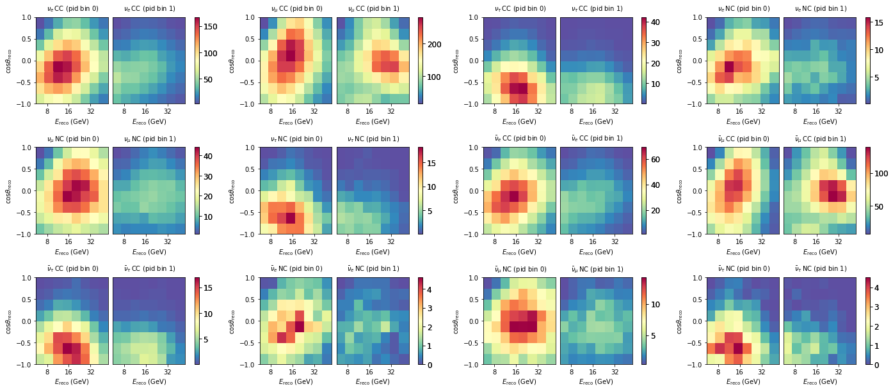
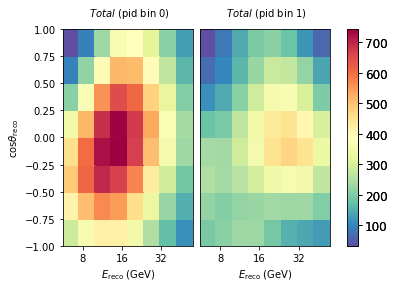
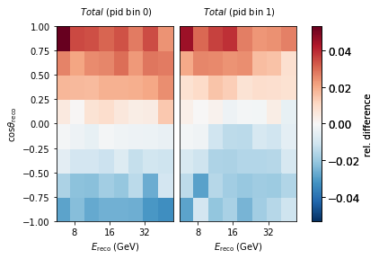
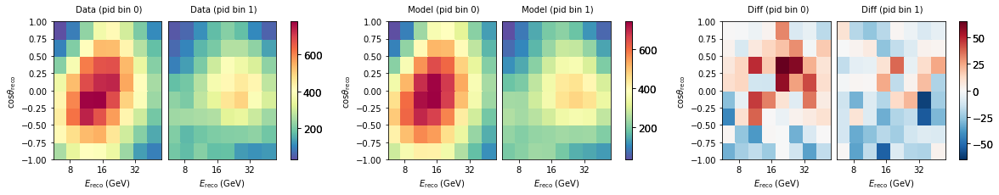
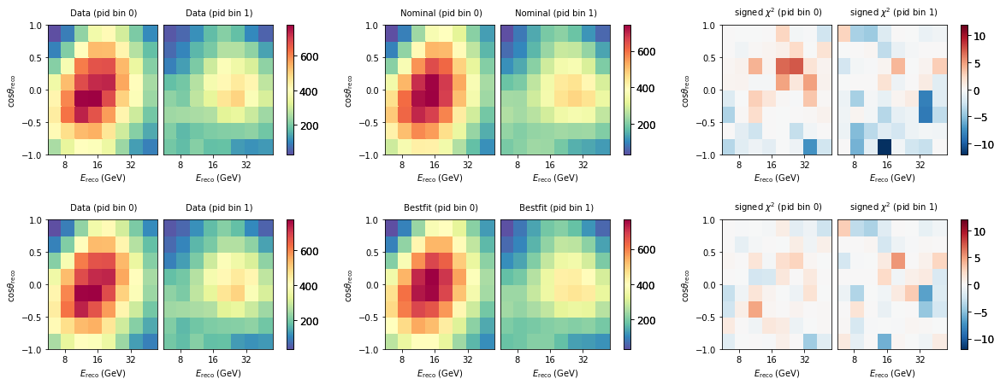

PISA Example Using Public IceCube Data¶
This analysis is a close variant of what is published in [1], and referred to as Sample B in [2] and [3]. The set of systematic uncertainties is slightly reduced and results will be close to, but not identical to the published numbers.
References:
[1] “Measurement of Atmospheric Neutrino Oscillations at 6-56 GeV with IceCube DeepCore,” IceCube Collaboration: M. G. Aartsen et al., Physical Review Letters 120, 071801 (2018). DOI: 10.1103/PhysRevLett.120.071801
[2] “Measurement of Atmospheric Tau Neutrino Appearance with IceCube DeepCore,” IceCube Collaboration: M. G. Aartsen et al., Phys. Rev. D99.3(2019), p. 032007. DOI: 10.1103/PhysRevD.99.032007
[3] “Probing the Neutrino Mass Ordering with Atmospheric Neutrinos from Three Years of IceCube DeepCore Data,” IceCube Collaboration: M.G. Aartsen et al., Feb 20, 2019, preprint: arXiv:1902.07771
Dataset must be obtained from https://icecube.wisc.edu/science/data/highstats_nuosc_3y
Setup¶
Usually you would need to export the location of the data, and the config files to PISA_RESOURCES. For this example however, the data is inside our package.
import numpy as np
from uncertainties import unumpy as unp
import matplotlib.pyplot as plt
import copy
import pisa
from pisa.core.distribution_maker import DistributionMaker
from pisa.core.pipeline import Pipeline
from pisa.analysis.analysis import Analysis
from pisa import FTYPE, ureg
Model¶
We can now instantiate the model (given our configs) that we later fit to data. This now containes two Pipelines in a DistributionMaker, one for our neutrinos, and one for the background muons.
model = DistributionMaker(["settings/pipeline/IceCube_3y_neutrinos.cfg", "settings/pipeline/IceCube_3y_muons.cfg"])
# this just turns on profiling
model.profile = True
model
| pipeline number | name | detector name | output_binning | output_key | profile |
|---|---|---|---|---|---|
| 0 | neutrinos | "dragon_datarelease": 8 (reco_energy) x 8 (reco_coszen) x 2 (pid) | ('weights', 'errors') | True | |
| 1 | muons | "dragon_datarelease": 8 (reco_energy) x 8 (reco_coszen) x 2 (pid) | ('weights', 'errors') | True |
Our model has a number of free parameters, that will be used in our fit to the data
model.params.free
| name | value | nominal_value | range | prior | units | is_fixed |
|---|---|---|---|---|---|---|
| nue_numu_ratio | 1 | 1 | [0.5, 1.5] | +/- 0.05 | dimensionless | False |
| Barr_uphor_ratio | 0 | 0 | [-3.0, 3.0] | +/- 1.0 | dimensionless | False |
| Barr_nu_nubar_ratio | 0 | 0 | [-3.0, 3.0] | +/- 1.0 | dimensionless | False |
| delta_index | 0 | 0 | [-0.5, 0.5] | +/- 0.1 | dimensionless | False |
| theta13 | 8.5 | 8.5 | [7.85, 9.1] | +/- 0.205 | degree | False |
| theta23 | 42.3 | 42.3 | [31, 59] | uniform | degree | False |
| deltam31 | 0.002457 | 0.002457 | [0.001, 0.007] | uniform | electron_volt ** 2 | False |
| aeff_scale | 1 | 1 | [0.0, 3.0] | uniform | dimensionless | False |
| nutau_norm | 1 | 1 | [-1.0, 8.5] | uniform | dimensionless | False |
| nu_nc_norm | 1 | 1 | [0.5, 1.5] | +/- 0.2 | dimensionless | False |
| opt_eff_overall | 1 | 1 | [0.8, 1.2] | +/- 0.1 | dimensionless | False |
| opt_eff_lateral | 25 | 25 | [5, 50] | +/- 10.0 | dimensionless | False |
| opt_eff_headon | 0 | 0 | [-5.0, 2.0] | uniform | dimensionless | False |
| ice_scattering | 0 | 0 | [-15, 15] | +/- 10.0 | dimensionless | False |
| ice_absorption | 0 | 0 | [-15, 15] | +/- 10.0 | dimensionless | False |
| atm_muon_scale | 1 | 1 | [0.0, 5.0] | uniform | dimensionless | False |
The two pipelines are quite different, with most complexity in the neutrino pipeline, that has several Stages and free parameters:
model.pipelines[0]
| stage number | name | calc_mode | apply_mode | has setup | has compute | has apply | # fixed params | # free params |
|---|---|---|---|---|---|---|---|---|
| 0 | csv_loader | events | events | True | False | True | 0 | 0 |
| 1 | honda_ip | "true_allsky_fine": 200 (true_energy) x 200 (true_coszen) | events | True | True | False | 1 | 0 |
| 2 | barr_simple | "true_allsky_fine": 200 (true_energy) x 200 (true_coszen) | events | True | True | False | 1 | 4 |
| 3 | prob3 | "true_allsky_fine": 200 (true_energy) x 200 (true_coszen) | events | True | True | True | 9 | 3 |
| 4 | aeff | events | events | False | False | True | 2 | 3 |
| 5 | hist | events | "dragon_datarelease": 8 (reco_energy) x 8 (reco_coszen) x 2 (pid) | True | False | True | 0 | 0 |
| 6 | hypersurfaces | "dragon_datarelease": 8 (reco_energy) x 8 (reco_coszen) x 2 (pid) | "dragon_datarelease": 8 (reco_energy) x 8 (reco_coszen) x 2 (pid) | True | True | True | 0 | 5 |
model.pipelines[0].stages[2].params
| name | value | nominal_value | range | prior | units | is_fixed |
|---|---|---|---|---|---|---|
| nu_nubar_ratio | 1 | 1 | [0.7, 1.3] | +/- 0.1 | 1 | True |
| nue_numu_ratio | 1 | 1 | [0.5, 1.5] | +/- 0.05 | 1 | False |
| Barr_uphor_ratio | 0 | 0 | [-3.0, 3.0] | +/- 1.0 | 1 | False |
| Barr_nu_nubar_ratio | 0 | 0 | [-3.0, 3.0] | +/- 1.0 | 1 | False |
| delta_index | 0 | 0 | [-0.5, 0.5] | +/- 0.1 | 1 | False |
While the muon pipleine is rather simple
model.pipelines[1]
| stage number | name | calc_mode | apply_mode | has setup | has compute | has apply | # fixed params | # free params |
|---|---|---|---|---|---|---|---|---|
| 0 | csv_icc_hist | "dragon_datarelease": 8 (reco_energy) x 8 (reco_coszen) x 2 (pid) | "dragon_datarelease": 8 (reco_energy) x 8 (reco_coszen) x 2 (pid) | True | False | True | 0 | 1 |
Retrieve Outputs¶
We can get individual outputs from just a pipleine like so. This fetches outputs from the neutrino pipleine, which are 12 maps.
maps = model.pipelines[0].get_outputs()
maps.names
['nue_cc',
'numu_cc',
'nutau_cc',
'nue_nc',
'numu_nc',
'nutau_nc',
'nuebar_cc',
'numubar_cc',
'nutaubar_cc',
'nuebar_nc',
'numubar_nc',
'nutaubar_nc']
fig, axes = plt.subplots(3,4, figsize=(24,10))
plt.subplots_adjust(hspace=0.5)
axes = axes.flatten()
for m, ax in zip(maps, axes):
m.plot(ax=ax)

If we are interested in just the total expecatation from the full model (all neutrinos + muons), we can do the following:
model.get_outputs(return_sum=True).plot()

Diff plots¶
Let’s explore how a change in one of our nuisance parameters affects the expected counts per bin. Here we choose a hole ice parameter and move it a smidge.
# reset all free parameters to put them back to nominal values
model.reset_free()
nominal = model.get_outputs(return_sum=True)
# shift one parameter
model.params.opt_eff_lateral.value = 20
sys = model.get_outputs(return_sum=True)
((nominal[0] - sys[0])/nominal[0]).plot(symm=True, clabel="rel. difference")

Get Data¶
We can load the real observed data too. This is a Pipeline with no free parameters, as the data is of course fixed. NB: When developping a new analysis you will not be allowed to look at the data as we do here before the box opening (c.f. blindness).
# real data
data_maker = Pipeline("settings/pipeline/IceCube_3y_data.cfg")
data = data_maker.get_outputs()
data_maker
| stage number | name | calc_mode | apply_mode | has setup | has compute | has apply | # fixed params | # free params |
|---|---|---|---|---|---|---|---|---|
| 0 | csv_data_hist | events | "dragon_datarelease": 8 (reco_energy) x 8 (reco_coszen) x 2 (pid) | True | False | False | 0 | 0 |
fig, ax = plt.subplots(1, 3, figsize=(20, 3))
model.reset_free()
nominal = model.get_outputs(return_sum=True)
data.plot(ax=ax[0], title="Data")
nominal.plot(ax=ax[1], title="Model")
(data - nominal).plot(ax=ax[2], symm=True, title="Diff")

Fitting¶
For fitting we need to configure a minimizer, several standard cfgs are available, but you can also define your own.
For the fit we need to choose a metric, and by default, theta23 octants, which are quasi degenerate, are fit seperately, which means two fits are run.
minimizer_cfg = pisa.utils.fileio.from_file('settings/minimizer/slsqp_ftol1e-6_eps1e-4_maxiter1000.json')
ana = Analysis()
%%time
result = ana.fit_hypo(
data,
model,
metric='mod_chi2',
minimizer_settings=minimizer_cfg,
fit_octants_separately=True,
)
[ WARNING] Minimizer slsqp requires artificial boundaries SMALLER than the user-specified boundaries (so that numerical gradients do not exceed the user-specified boundaries).
(deg) (deg) (eV**2)
iter funcalls mod_chi2 | nue_numu_rat Barr_uphor_r Barr_nu_nuba delta_index theta13 theta23 deltam31 aeff_scale nutau_norm nu_nc_norm opt_eff_over opt_eff_late opt_eff_head ice_scatteri ice_absorpti atm_muon_sca
------ ---------- ------------ + ------------ ------------ ------------ ------------ ------------ ------------ ------------ ------------ ------------ ------------ ------------ ------------ ------------ ------------ ------------ ------------
0 6 1.75086e+02 | 1.00000e+00 0.00000e+00 0.00000e+00 0.00000e+00 8.50013e+00 4.23000e+01 2.45700e-03 1.00000e+00 1.00000e+00 1.00000e+00 1.00000e+00 2.50000e+01 0.00000e+00 0.00000e+00 0.00000e+00 1.00000e+00
---------------------------------------------------------------------------
KeyboardInterrupt Traceback (most recent call last)
<timed exec> in <module>
~/pisa/pisa/analysis/analysis.py in fit_hypo(self, data_dist, hypo_maker, metric, minimizer_settings, hypo_param_selections, reset_free, check_octant, fit_octants_separately, check_ordering, other_metrics, blind, pprint, external_priors_penalty)
511 pprint=pprint,
512 blind=blind,
--> 513 external_priors_penalty=external_priors_penalty
514 )
515
~/pisa/pisa/analysis/analysis.py in fit_hypo_inner(self, data_dist, hypo_maker, metric, minimizer_settings, other_metrics, pprint, blind, external_priors_penalty)
776 method=minimizer_settings['method']['value'],
777 options=minimizer_settings['options']['value'],
--> 778 callback=self._minimizer_callback
779 )
780 end_t = time.time()
~/.local/lib/python3.7/site-packages/scipy/optimize/_minimize.py in minimize(fun, x0, args, method, jac, hess, hessp, bounds, constraints, tol, callback, options)
616 elif meth == 'slsqp':
617 return _minimize_slsqp(fun, x0, args, jac, bounds,
--> 618 constraints, callback=callback, **options)
619 elif meth == 'trust-constr':
620 return _minimize_trustregion_constr(fun, x0, args, jac, hess, hessp,
~/.local/lib/python3.7/site-packages/scipy/optimize/slsqp.py in _minimize_slsqp(func, x0, args, jac, bounds, constraints, maxiter, ftol, iprint, disp, eps, callback, **unknown_options)
421 # Compute the derivatives of the objective function
422 # For some reason SLSQP wants g dimensioned to n+1
--> 423 g = append(fprime(x), 0.0)
424
425 # Compute the normals of the constraints
~/.local/lib/python3.7/site-packages/scipy/optimize/optimize.py in function_wrapper(*wrapper_args)
325 def function_wrapper(*wrapper_args):
326 ncalls[0] += 1
--> 327 return function(*(wrapper_args + args))
328
329 return ncalls, function_wrapper
~/.local/lib/python3.7/site-packages/scipy/optimize/slsqp.py in approx_jacobian(x, func, epsilon, *args)
61 for i in range(len(x0)):
62 dx[i] = epsilon
---> 63 jac[i] = (func(*((x0+dx,)+args)) - f0)/epsilon
64 dx[i] = 0.0
65
~/.local/lib/python3.7/site-packages/scipy/optimize/optimize.py in function_wrapper(*wrapper_args)
325 def function_wrapper(*wrapper_args):
326 ncalls[0] += 1
--> 327 return function(*(wrapper_args + args))
328
329 return ncalls, function_wrapper
~/pisa/pisa/analysis/analysis.py in _minimizer_callable(self, scaled_param_vals, hypo_maker, data_dist, metric, counter, fit_history, pprint, blind, external_priors_penalty)
1113 metric_kwargs = {'empty_bins':hypo_maker.empty_bin_indices}
1114 else:
-> 1115 hypo_asimov_dist = hypo_maker.get_outputs(return_sum=True)
1116 if isinstance(hypo_asimov_dist, OrderedDict):
1117 hypo_asimov_dist = hypo_asimov_dist['weights']
~/pisa/pisa/core/distribution_maker.py in get_outputs(self, return_sum, sum_map_name, sum_map_tex_name, **kwargs)
250
251 outputs = [pipeline.get_outputs(**kwargs) for pipeline in self] # pylint: disable=redefined-outer-name
--> 252
253 if return_sum:
254
~/pisa/pisa/core/distribution_maker.py in <listcomp>(.0)
250
251 outputs = [pipeline.get_outputs(**kwargs) for pipeline in self] # pylint: disable=redefined-outer-name
--> 252
253 if return_sum:
254
~/pisa/pisa/core/pipeline.py in get_outputs(self, output_binning, output_key)
305
306 self.run()
--> 307
308 if output_binning is None:
309 output_binning = self.output_binning
~/pisa/pisa/core/pipeline.py in run(self)
329 for stage in self.stages:
330 logging.debug(f"Working on stage {stage.stage_name}.{stage.service_name}")
--> 331 stage.run()
332
333 def setup(self):
~/pisa/pisa/core/stage.py in run(self)
368
369 def run(self):
--> 370 self.compute()
371 self.apply()
372 return None
~/pisa/pisa/core/stage.py in compute(self)
338 if self.profile:
339 start_t = time()
--> 340 self.compute_function()
341 end_t = time()
342 self.calc_times.append(end_t - start_t)
~/pisa/pisa/stages/osc/prob3.py in compute_function(self)
316 container['densities'],
317 container['distances'],
--> 318 out=container['probability'],
319 )
320 container.mark_changed('probability')
~/pisa/pisa/stages/osc/prob3.py in calc_probs(self, nubar, e_array, rho_array, len_array, out)
231 rho_array,
232 len_array,
--> 233 out=out
234 )
235
KeyboardInterrupt:
Here we can view the bestfit parameters - the result of our fit.
We have run two fits (separately for each theta23 octant), and the best result is stored in results[0] (both fits are also available under results[1])
bestfit_params = result[0]['params'].free
bestfit_params
| name | value | nominal_value | range | prior | units | is_fixed |
|---|---|---|---|---|---|---|
| nue_numu_ratio | 1.03304 | 1 | [0.5, 1.5] | +/- 0.05 | dimensionless | False |
| Barr_uphor_ratio | -0.313404 | 0 | [-3.0, 3.0] | +/- 1.0 | dimensionless | False |
| Barr_nu_nubar_ratio | -0.0200293 | 0 | [-3.0, 3.0] | +/- 1.0 | dimensionless | False |
| delta_index | -0.0106011 | 0 | [-0.5, 0.5] | +/- 0.1 | dimensionless | False |
| theta13 | 8.50992 | 8.5 | [7.85, 9.1] | +/- 0.205 | degree | False |
| theta23 | 46.2525 | 42.3 | [31, 59] | uniform | degree | False |
| deltam31 | 0.00242605 | 0.002457 | [0.001, 0.007] | uniform | electron_volt ** 2 | False |
| aeff_scale | 0.934868 | 1 | [0.0, 3.0] | uniform | dimensionless | False |
| nutau_norm | 0.610718 | 1 | [-1.0, 8.5] | uniform | dimensionless | False |
| nu_nc_norm | 1.26342 | 1 | [0.5, 1.5] | +/- 0.2 | dimensionless | False |
| opt_eff_overall | 1.05348 | 1 | [0.8, 1.2] | +/- 0.1 | dimensionless | False |
| opt_eff_lateral | 22.0081 | 25 | [5, 50] | +/- 10.0 | dimensionless | False |
| opt_eff_headon | -1.32275 | 0 | [-5.0, 2.0] | uniform | dimensionless | False |
| ice_scattering | -2.87791 | 0 | [-15, 15] | +/- 10.0 | dimensionless | False |
| ice_absorption | 1.76103 | 0 | [-15, 15] | +/- 10.0 | dimensionless | False |
| atm_muon_scale | 0.931489 | 1 | [0.0, 5.0] | uniform | dimensionless | False |
# update the model with the bestfit (make a copy here, because we don't want our bestfit params to be affected (NB: stuff is passed by reference in python))
model.update_params(copy.deepcopy(bestfit_params))
Let’s see how good that fit looks like. We here construct signed mod_chi2 maps by hand. You can see that after the fit, it improved considerably, and the distribution of chi2 values is now more uniform - not much features can be seen anymore.
fig, ax = plt.subplots(2, 3, figsize=(20, 7))
plt.subplots_adjust(hspace=0.5)
bestfit = model.get_outputs(return_sum=True)
data.plot(ax=ax[0,0], title="Data")
nominal.plot(ax=ax[0,1], title="Nominal")
diff = data - nominal
(abs(diff)*diff/(nominal + unp.std_devs(nominal.hist['total']))).plot(ax=ax[0,2], symm=True, title=r"signed $\chi^2$", vmin=-12, vmax=12)
data.plot(ax=ax[1,0], title="Data")
bestfit.plot(ax=ax[1,1], title="Bestfit")
diff = data - bestfit
(abs(diff)*diff/(bestfit + unp.std_devs(bestfit.hist['total']))).plot(ax=ax[1,2], symm=True, title=r"signed $\chi^2$", vmin=-12, vmax=12)

When checking the chi2 value from the fitted model, you maybe see that it is around 113, while in the minimizer loop we saw it converged to 116. It is important to keep in mind that in the fit we had extended the metric with prior penalty terms. When we add those back we get the identical number as reported in the fit.
print(data.metric_total(nominal, 'mod_chi2'))
print(data.metric_total(bestfit, 'mod_chi2'))
175.08610154304426
113.03553972952989
Evaluating other metrics just for fun:
for metric in pisa.utils.stats.ALL_METRICS:
try:
print('%s = %.3f'%(metric,data.metric_total(bestfit, metric)))
except:
print('%s failed'%metric)
llh = -64.972
conv_llh = -57.326
barlow_llh = -1147.290
mcllh_mean = -541.333
mcllh_eff = -541.486
generalized_poisson_llh failed
chi2 = 128.476
mod_chi2 = 113.036
Adding prior penalty terms
model.update_params(copy.deepcopy(bestfit_params))
data.metric_total(bestfit, 'mod_chi2') + model.params.priors_penalty('mod_chi2')
115.8086745310561
result[0]['metric_val']
115.8086745310561
Storing the results to a file¶
Since the fit took a while, it might be useful to store the results to a file. (NB: in this example we use a temp file, but in real life you would of course just use a real pathname instead!)
import tempfile
temp = tempfile.NamedTemporaryFile(suffix='.json')
pisa.utils.fileio.to_file(result, temp.name)
[ WARNING] Overwriting file at '/tmp/tmp04yxkl60.json'
To reload, we can read the file. But to get PISA objects back, they need to instantiated
result_reload = pisa.utils.fileio.from_file(temp.name)
bestfit_params = pisa.core.ParamSet(result_reload[0]['params']).free
bestfit_params
temp.close()
Profiling¶
To understand what parts of the model were executed how many times, and how long it took, the profiling can help:
model.pipelines[0].report_profile()
data csv_loader
- setup: Total time 0.00000 s, n calls: 0, time/call: 0.00000 s
- calc: Total time 0.00000 s, n calls: 0, time/call: 0.00000 s
- apply: Total time 1.34596 s, n calls: 817, time/call: 0.00165 s
flux honda_ip
- setup: Total time 0.00000 s, n calls: 0, time/call: 0.00000 s
- calc: Total time 25.08353 s, n calls: 1, time/call: 25.08353 s
- apply: Total time 0.00072 s, n calls: 817, time/call: 0.00000 s
flux barr_simple
- setup: Total time 0.00000 s, n calls: 0, time/call: 0.00000 s
- calc: Total time 118.13966 s, n calls: 330, time/call: 0.35800 s
- apply: Total time 0.00091 s, n calls: 817, time/call: 0.00000 s
osc prob3
- setup: Total time 0.00000 s, n calls: 0, time/call: 0.00000 s
- calc: Total time 339.71126 s, n calls: 290, time/call: 1.17142 s
- apply: Total time 73.15262 s, n calls: 817, time/call: 0.08954 s
aeff aeff
- setup: Total time 0.00000 s, n calls: 0, time/call: 0.00000 s
- calc: Total time 0.00056 s, n calls: 290, time/call: 0.00000 s
- apply: Total time 1.62155 s, n calls: 817, time/call: 0.00198 s
utils hist
- setup: Total time 0.00000 s, n calls: 0, time/call: 0.00000 s
- calc: Total time 0.00000 s, n calls: 0, time/call: 0.00000 s
- apply: Total time 73.78663 s, n calls: 817, time/call: 0.09031 s
discr_sys hypersurfaces
- setup: Total time 0.00000 s, n calls: 0, time/call: 0.00000 s
- calc: Total time 0.27885 s, n calls: 372, time/call: 0.00075 s
- apply: Total time 0.44868 s, n calls: 817, time/call: 0.00055 s